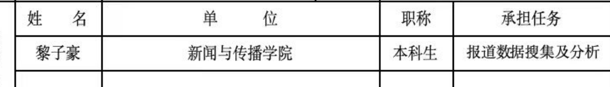

95分及以上课程（11门）9095100 马克思主义新闻观与新闻理论99 基础写作98 新闻采访与写作97 逻辑学96 传播学概论95 媒介批评95 新媒体用户分析95 新闻传播研究方法95 数据新闻95 新媒体概论95 视听创意策划与设计（创新创业实验课程）95
Don’t be too calm: How does the combination of visual and textual frames influence expressions of anger in short video comment sections? Li, Zihao独立作者 Association for Education in Journalism and Mass Communication 2026Visual Communication Division Paper & DataScan for repository
融媒体时代新型主流媒体环境话语建构与视觉叙事策略研究 项目类别中央高校基本科研业务费专项资金青年教师科研创新项目 项目负责人李昕昕 本人身份课题组成员 本人任务报道数据搜集及分析 课题组成员页